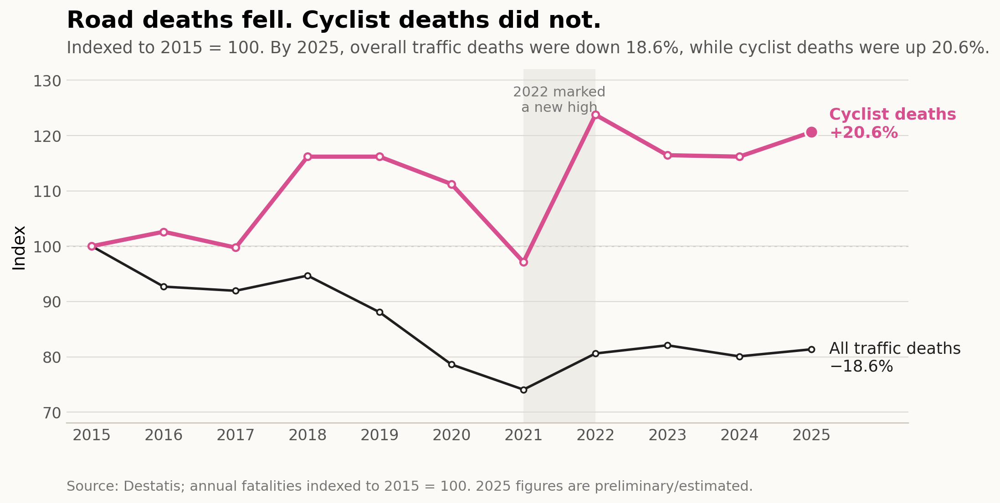
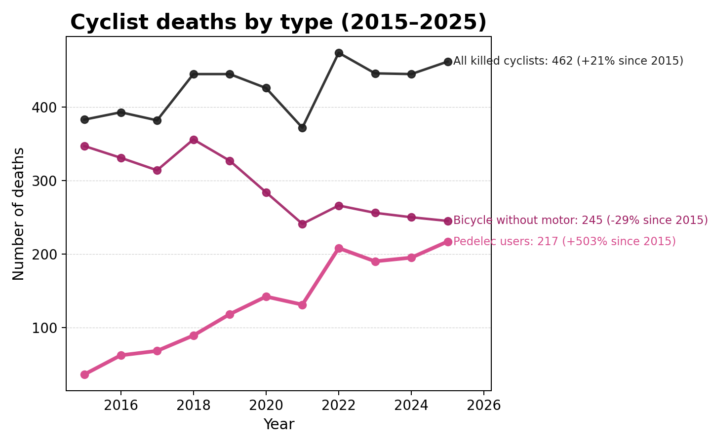
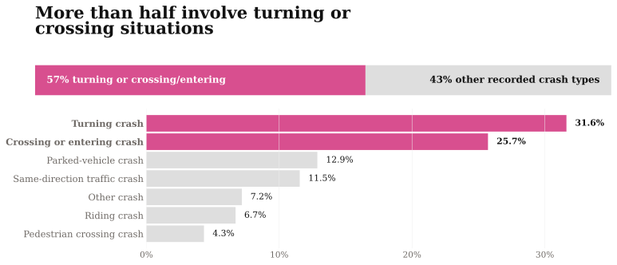

MOBILITY
Spring on Two Wheels
Every spring, Germany’s streets change before the calendar says so: bikes come out of basements, batteries are charged, and familiar routes grow longer again. Pedelecs have widened freedom and range, but Germany’s road-safety gains have not reached cyclists in the same way.
Photo: Kingbull Bikes / Unsplash
The Mobility Win With a Safety Gap
For many riders, especially older ones, the pedelec is not just a bike with a motor. It is range, independence and a way back onto the road.
That gain is real. The safety problem is real too. When deaths are indexed to 2015, Germany’s broader road-safety line falls, while the cyclist line ends higher than where it began.
The safety trend split: Road deaths fell. Cyclist deaths did not.

The split does not mean cycling suddenly became more dangerous for every rider. Fatality counts do not measure risk per kilometer, trip, or rider. But they do show that Germany’s broader road-safety gains did not show up for cyclists in the same way. To understand the gap, the next question is what changed inside cyclist deaths.
What changed inside cyclist deaths

By 2025, pedelec users accounted for nearly half of cyclist deaths. That shift matters because pedelecs do not only change how people ride. They also change who rides, how far cycling feels possible, and where cycling becomes part of everyday life.
More riders, more exposure, mixed streets
Pedelecs did not become a safety issue in a vacuum. They became popular. In 2022, 15.5% of private households in Germany had at least one pedelec, compared with 3.4% in 2014. For older riders in particular, the motor can turn cycling back into something ordinary: a longer route, a hill, a shopping trip, a way to stay mobile.
That also changes who is exposed. In 2025, riders aged 65 or older made up the largest share among killed pedelec users: about two in three were 65 or older, compared with just over half among killed riders on conventional bicycles. The point is not that older riders should ride less. It is that the mobility they gained needs streets, training and protection that match their vulnerability.
The safety gap appears when that new mobility meets streets that have not fully adapted to it. In 2025, two thirds of bicycle injury crashes involved another road user; in most of those cases, the other party was a car. Pedelecs also bring handling challenges of their own: they are heavier than conventional bicycles and can behave differently when starting, braking or turning.
The national numbers show the safety gap. Berlin’s crash record brings it down to street level: to turning movements, crossing situations and everyday places where bikes and cars meet.
Where the safety gap becomes local
National numbers mirror the trend. Berlin’s crash record decomposes what mixed streets often mean in reality.
Choose the two crash situations you think were most common in Berlin’s bicycle-involved injury crashes.

Hint: Think about where riders are most likely to meet changing traffic flows.
What helps
The answer is not to roll back pedelec mobility. The answer is safer pedelec mobility: protected infrastructure, safer intersections, targeted riding practice, and better visibility and protective behavior.
The evidence in this story points to a common logic: changing rider mixes and more use intersect with street environments that still expose cyclists to turning and crossing movements. That combination raises counts even as overall road deaths fall, so the practical response is to change the places where those movements meet.
A TUM University Hospital study of e-bike crash patients points to the same vulnerability. Severe cases often involved older riders, head injuries and missing helmet protection. In the intensive-care cases described by the researchers, patients were almost all older men, and none had worn a helmet.
The goal is not to make people ride less. It is to make the mobility they gained safer. And for individual riders, one recommendation comes through without much ambiguity.
“Always wear a helmet.”
PD Dr. Dr. Michael Zyskowski, TUM University Hospital
Before you ride: check the weather, too.
Rain, wind and low visibility can turn familiar routes into riskier ones. A weather check will not solve the safety gap, but it can make the next ride a little more deliberate.
Method and caveats
What was counted
This article uses police-recorded fatalities and injury crashes. National fatality figures come from Destatis traffic-accident statistics and related press releases. The Berlin crash-type breakdown uses Unfallatlas data as made available through Fahrrad-Unfallorte and the statistical offices of the Federation and the Länder. In the official statistics, “pedelec” refers to a pedal-assisted bicycle whose motor support cuts off at 25 km/h.
What the figures show
The charts show how recorded counts changed over time: overall road deaths, cyclist deaths, the split between conventional bicycles and pedelecs, and the most common recorded crash situations in Berlin. The Berlin figure describes bicycle-involved injury crashes in 2024, not fatal crashes only.
What they cannot show
The figures do not measure individual risk. They are not adjusted for kilometres ridden, number of trips, rider age, route choice or cycling volume. Rising pedelec fatalities can reflect more use, an older rider mix, longer distances, different crash severity, reporting patterns, or several of these factors at once. Crash type describes the recorded situation, not legal fault. The weather card is a practical riding reminder and is not part of the crash analysis.